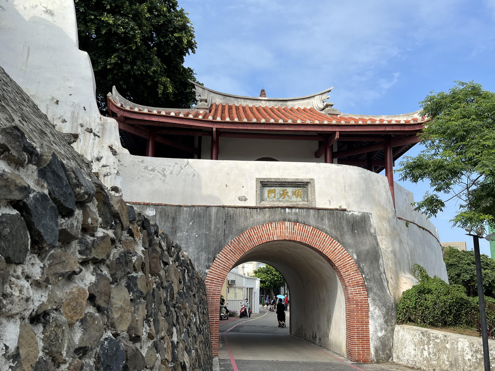

順承門，又名澎湖廳城小西門，是1885年中法戰爭後於1886年所籌建之澎湖廳城（媽宮城）的六座城門之一，與大西門並列為中華民國國定古蹟。 歷史 媽宮城周圍有七百八十九丈二尺五寸，牆垛七百五十個，牆身連牆垛高一丈八尺，牆根地基三尺五寸，厚二丈四尺。共設有六座城門，東門名「朝陽」，小西門稱「順承」，南門名「即敘」，而北門名「拱辰」，小南門名「迎薰」，大西門沒有設城樓，其中順承門位於馬公港邊的中山路盡西處，上有古城牆為屏，下臨馬公港灣，樓是媽宮古城殘跡裡唯一保存的門樓建築，並在民國75年（西元1986年）修成今貌。2015年進行封城修繕，該工程由澎湖縣建設處和文化局主導，大批牆垣上的植樹被砍光，工程也延宕多年，直到2018年7月才完工開放。
(來源:https://zh.wikipedia.org/zh-tw/%E9%A0%86%E6%89%BF%E9%96%80)
